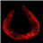

Noticias
 Una investigación afirma que envejecemos por accidente
Científicos de Stanford proponen que el envejecimiento se debe a un accidente evolutivo y proponen una nueva teoría para la vejez.
 Se descubre una posible vulnerabilidad del virus del SIDA
Se descubre una posible vulnerabilidad del virus del SIDA
Se abren posibilidades para la creación de una vacuna contra el SIDA.
Descuben en Perú ruinas de 5500 años de antiguedad
Se descubren las ruinas mas antiguas conocidas a la fecha en Perú: 5500 años de antigüedad.
27 nuevos sitios al Patrimonio Cultural de la Humanidad
La UNESCO declara a 27 sitios, Patrimonio Mundial de la Humanidad.
Agua en la luna
Investigadores encuentran agua en muestras lunares de las expediciones Apolo.
Derechos legales a los grandes simios en España
Los simios superiores obtienen derechos humanos fundamentales en España.
Conferencia Envejecimiento 2008: La vejez es una enfermedad
Conoce sobre una conferencia científica de especialistas enfocados en erradicar el envejecimiento
Record Mundial Guiness para Firefox 3
Anuncio del logro del Record Mundial Guinness para Firefox 3.
El desenlace de “una vida en venta”
Ian Usher vendió su vida en eBay, he aquí cómo terminó la venta, y sus planes a futuro.
El Polo Norte sin hielo
Dijeron que en el 2080, luego en 2050, cambiaron a 2013, ahora los expertos dicen que en 2008 podría descongelarse el Ártico.
Categorías
Archivo
Últimas anotaciones en cada categoría

Divulgación
El dinero no fomenta la creatividad: Daniel Pink en TEDGlobal 2009

Inspiración
Los 30 no son los nuevos 20

Noticias
Ver tu mente en tiempo real: Christopher deCharms en TED 2008
![Música en la era digital [Animación]](../../../../wp-content/themes/tma/images/featured/animation_04_2009_featured.jpg)
Ocio
Música en la era digital [Animación]